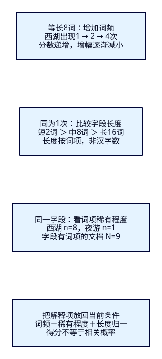
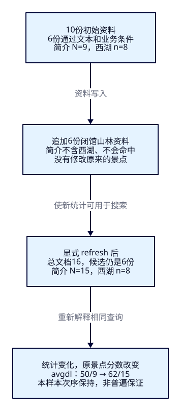

同样包含西湖，
为什么这样排？
候选已经找回，游客仍要从第一屏决定去哪。四次提到“西湖”的简介，应该比简短、准确的介绍更靠前吗？本课先解释ES按什么给分，再用相同查询、真实解释树和语料变化，把“能命中”与“排得合理”分开检验。
学完能证明什么
- 用等长词频对照、等词频长度对照，解释六份西湖资料的相对次序，不背固定小数。
- 从真实_explain读出freq、n/N、dl/avgdl，指出被过滤的资料为何仍影响字段统计。
- 保持候选集合，切换must/filter并追加不命中的资料；用REST、Java与观察窗核对分数、次序和失败恢复。
1. 搜到了，还要解释第一屏
F13–F17解决分析、别名、读音和错字带来的漏召回与误召回；F17为便于核对，多数查询按业务ID排列。现在进入阶段四：同城、开放、预算内的景点都包含“西湖”，为何有的先出现？按ID只能让次序稳定，补全的weight又是资料方给的提示权重，都没有解释普通全文搜索的相关性。
Elasticsearch是组织文档并执行检索、评分和分析的搜索引擎。本课把候选交给BM25：一种根据词项统计估计文本相关性的模型。它会看某个词在这份简介中出现几次、在多少份简介里出现、这份简介相对平均长度有多长。它不会自动理解哪个名字才是游客真正想去的景点，也不把票价、点评或距离自动算进文本得分。业务数据库继续维护真实资料，Java组织请求，ES返回评分证据。
2. 先固定词边界，隔离评分因素
本课10份虚构资料，不陈述真实景点的价格或状态。只搜索description，name作为卡片标题不参与评分。简介特意用空格给定中文词边界，whitespace分词再lowercase，让“西湖”成为一个词项；若沿用standard逐字切中文，解释树会分别出现“西”和“湖”，不适合这次单因素对照。这里不是在推荐生产中文分词方案，也没有把修改分词器的效果算作评分改进。
| ID / 名称 | description完整原文 | 西湖词频 / 词项数 | 城市 / 状态 / 票价分 |
|---|---|---|---|
| hz-short 西湖短介绍 | 西湖 湖景 | 1 / 2 | HZ / open / 0 |
| hz-once 西湖漫步 | 西湖 散步 湖景 游船 绿道 荷花 小桥 茶点 | 1 / 8 | HZ / open / 1000 |
| hz-twice 西湖双次提及 | 西湖 西湖 湖景 游船 绿道 荷花 小桥 茶点 | 2 / 8 | HZ / open / 2000 |
| hz-four 西湖四次提及 | 西湖 西湖 西湖 西湖 绿道 荷花 小桥 茶点 | 4 / 8 | HZ / open / 3000 |
| hz-long 西湖长介绍 | 西湖 湖景 游船 绿道 荷花 小桥 茶点 展馆 老街 晨跑 夜色 远山 曲院 风荷 石桥 柳岸 | 1 / 16 | HZ / open / 4000 |
| hz-night 西湖夜游 | 西湖 夜游 | 1 / 2 | HZ / open / 5000 |
| hz-closed 西湖闭馆资料 | 西湖 湖景 | 1 / 2 | HZ / closed / 0 |
| sz-copy 异城西湖资料 | 西湖 湖景 | 1 / 2 | SZ / open / 0 |
| hz-other 山林步道 | 山林 瀑布 | 0 / 2 | HZ / open / 0 |
| hz-missing 尚无简介 | （字段缺失） | 0 / — | HZ / open / 0 |
全部CNY，票价为整数分；默认HZ、open、0至10000分。初始6份满足文本与业务条件；闭馆、异城资料也含“西湖”，山林资料不含，缺简介资料没有该字段的索引词项。固定语料共有50个简介词项，9份有词项的简介，8份含“西湖”，只有1份含“夜游”。样本清单可人工核对，末尾六份山林追加资料另存文件，不能提前导入。
3. 词频、稀有程度与字段长度怎样共同起作用
词频freq是当前文档、当前字段中一个词项的出现次数。比较hz-once、hz-twice、hz-four：长度都为8，西湖分别出现1、2、4次。这排除了“重复以后整段更长”的混淆。BM25的词频贡献逐渐饱和：多提一次仍能加分，但不是按次数线性翻倍。控制饱和的参数叫k1；本课显式设1.2。
文档频率n数的是含有该词项的字段文档，一篇重复四次也只增加一份。N是这个字段有索引词项的文档数；它不是命中数，也未必等于索引_count。“夜游”n=1，比n=8的“西湖”更稀有，逆文档频率idf便更大。它衡量当前语料中的区分能力，不证明这个词对所有游客都重要。
字段长度dl来自分析后的词项计数与norm，不是简介的汉字数、字节数或整个JSON的长度。比较freq都为1的hz-short、hz-once、hz-long：长度2、8、16。其他因素相同时，较长字段中的一次提及会被归一化得更低。avgdl是字段总词频除以N；b控制长度归一的程度，本课显式设0.75。短简介不会无条件击败更高词频或更稀有词项；长度norm还会压缩编码，长文本不能一律按原始字数精确反推。

4. f18-c01：建立一主分片的固定前提
ES9.4.0 / Lucene10.4.0，独立19218、tut-f18-attractions，一主零副本、strict、refresh=-1、无插件。固定一主分片让本课统计来自同一份分片语料；索引创建版本也由本轮9.4.0建立。容器只绑定本机且关闭安全，供隔离实验使用；应用仍用F07锁定的Boot4.0.8、JDK25.0.4.1+1与官方客户端9.4.8。应用JDK与ES镜像自带JVM分开记录。
cd projects/travel-search
export ES_URL=http://127.0.0.1:19218
docker compose -f infra/f18/compose.yaml up -d es
bash infra/f18/wait.sh
# 已有本课索引先执行文末cleanup，再从01开始
bash labs/f18/01-bm25.sh01检查版本与插件、建索引、等green、Bulk10份且逐项created、显式refresh、count10，再读取实际配置、词项和评分。不是依靠读者足够快来观察旧视图。完整配置如下：显式similarity挂到description；同名类型BM25使用1.2/0.75/discount_overlaps=true，这与当前BM25的参数默认值相同，但本课并未修改所有索引的默认值。资料没有零位置增量的重叠词项。
{
"settings": {
"number_of_shards": 1,
"number_of_replicas": 0,
"refresh_interval": "-1",
"analysis": {
"analyzer": {"score_words": {"type": "custom", "tokenizer": "whitespace", "filter": ["lowercase"]}}
},
"similarity": {"lesson_bm25": {"type": "BM25", "k1": 1.2, "b": 0.75, "discount_overlaps": true}}
},
"mappings": {
"dynamic": "strict",
"properties": {
"attraction_id": {"type": "keyword"},
"name": {"type": "keyword"},
"description": {
"type": "text",
"analyzer": "score_words",
"similarity": "lesson_bm25",
"norms": true,
"index_options": "positions",
"term_vector": "with_positions_offsets"
},
"city_code": {"type": "keyword"},
"status": {"type": "keyword"},
"currency": {"type": "keyword"},
"ticket_price_fen": {"type": "integer"}
}
}
}5. 同一个查询，先核对候选，再读次序
match分析输入“西湖”，在description里只有一个词项。must要求文本命中并参与评分；filter限定城市、状态、币种和票价，不给这些条件额外加分。显式_score降序决定主次序，attraction_id升序稳定同分资料。前20份、精确计数与explain=true用于小样本诊断，不代表生产每次搜索都应携带整棵解释树。
{
"size": 20,
"track_total_hits": true,
"explain": true,
"query": {
"bool": {
"must": [{"match": {"description": {"query": "西湖", "operator": "or"}}}],
"filter": [
{"term": {"status": {"value": "open"}}},
{"term": {"currency": {"value": "CNY"}}},
{"range": {"ticket_price_fen": {"gte": 0, "lte": 10000}}},
{"term": {"city_code": {"value": "HZ"}}}
]
}
},
"sort": [{"_score": "desc"}, {"attraction_id": "asc"}]
}| 实际次序 | freq / dl | 本次_score约值 |
|---|---|---|
| hz-four | 4 / 8 | 0.255569 |
| hz-night | 1 / 2 | 0.220161 |
| hz-short | 1 / 2 | 0.220161 |
| hz-twice | 2 / 8 | 0.198855 |
| hz-once | 1 / 8 | 0.137728 |
| hz-long | 1 / 16 | 0.091866 |
这些是两轮真实执行的初始语料结果，保留六位小数只便于阅读；验收比较相对次序、解释项和合理数值误差，不要求跨环境逐位相同。等长组1→2约增44%，2→4约增29%，重复四次并没有获得四倍分数。等频组短2词高于8词、高于16词。hz-night与hz-short同分，以ID决胜；hz-four甚至胜过短介绍，说明长度归一与词频共同作用。重复文本得到更高模型分，也暴露了“堆词不一定更符合意图”的局限。
6. 一份资料的解释树，从叶子读回根
_search的explain=true给每份命中带解释；_explain则针对一个已存在的ID，用给定query判断它是否匹配并计算解释。后者必须带上相同的城市、状态和预算，否则解释的是另一个问题。下面body与主搜索的query完全相同，路径指定hz-short。
{
"query": {
"bool": {
"must": [{"match": {"description": {"query": "西湖", "operator": "or"}}}],
"filter": [
{"term": {"status": {"value": "open"}}},
{"term": {"currency": {"value": "CNY"}}},
{"range": {"ticket_price_fen": {"gte": 0, "lte": 10000}}},
{"term": {"city_code": {"value": "HZ"}}}
]
}
}
}{
"id": "hz-short",
"matched": true,
"score": 0.22016111,
"freq": 1.0,
"n": 8,
"N": 9,
"dl": 2.0,
"avgdl": 5.5555553,
"k1": 1.2,
"b": 0.75,
"boost": 2.2,
"idf": 0.16251893,
"tf": 0.61576355
}完整真实响应里，先找到description:西湖，再读freq=1、dl=2、n=8、N=9、avgdl≈5.555556。6份业务候选没有把N变成6：闭馆和异城资料虽然被filter排除，仍属于这个字段的统计语料。缺简介文档使索引_count=10、字段N=9各有含义。树中某些过滤条件的0贡献可能被改写省略，不能按树节点数反推原始filter数量。
此处idf=ln(1+(N−n+0.5)/(n+0.5))；tf=freq/(freq+k1×(1−b+b×dl/avgdl))。读到boost×idf×tf时要注意：本课没有设置查询boost，树里却显示boost≈2.2。ES9.4.0的LegacyBM25Similarity把k1+1传进Lucene的boost，1+1.2正是2.2；当前单词项贡献等价于idf×freq×(k1+1)/(freq+k1×(1−b+b×dl/avgdl))。这不是运营额外加分。公式用于解释这些叶子怎样合成，浮点计算和norm量化仍以实际响应为准。
01还解释hz-closed与hz-other：两者matched=false、根value=0，但前者含词、因状态不符合，后者根本不含目标词。零分不是同一种原因。解释描述中的“in 0”等数字是Lucene内部文档编号，不是业务ID；不能拿来跨重建追踪实体。
固定版本依据：只读本课需要的源码入口
- SimilarityService选择默认BM25；SimilarityProviders.createBM25Similarity给出参数与兼容实现。
- LegacyBM25Similarity.scorer应用k1+1；Lucene10.4.0 BM25Similarity的idf、avgFieldLength与scorer给出统计和公式。
- TransportExplainAction处理指定资料的解释请求。四个本地ES源码与官方tag字节一致，来源收据将当前官方说明与固定版本区分。
7. f18-c02：加一个稀有词，为什么夜游上来了
bash labs/f18/02-contexts.sh把输入改为“西湖 夜游”，仍用同字段、无查询boost、operator=or：包含任一词项即可进入候选。这个OR是本课显式选择；若换成AND，候选就只剩夜游，不能把那种集合变化混同于本次排名比较。
{
"size": 20,
"track_total_hits": true,
"explain": true,
"query": {
"bool": {
"must": [{"match": {"description": {"query": "西湖 夜游", "operator": "or"}}}],
"filter": [
{"term": {"status": {"value": "open"}}},
{"term": {"currency": {"value": "CNY"}}},
{"range": {"ticket_price_fen": {"gte": 0, "lte": 10000}}},
{"term": {"city_code": {"value": "HZ"}}}
]
}
},
"sort": [{"_score": "desc"}, {"attraction_id": "asc"}]
}初始语料的六个ID仍然相同，hz-night从同分第二升为第一，约2.790151；其后依次hz-four、hz-short、hz-twice、hz-once、hz-long。解释树显示它同时有西湖与夜游两个贡献，n分别8与1、N均9；夜游的idf≈1.897120，西湖约0.162519。夜游匹配的是稀有线索，而且两项贡献相加；不能只说“名字更准确”或把整次变化全归给某一个因素。本课只读这个单字段OR的加和，不在此引入多字段权重方案。
8. 同一组候选，把文本移到filter
02再运行两种完整对照。第一种把文本也放进filter，仍要求命中“西湖”，所以不会突然返回所有开放景点；但整条查询没有评分子句，六份_score都为0，按ID升序成hz-four、hz-long、hz-night、hz-once、hz-short、hz-twice。_explain仍matched=true，却没有简介BM25贡献。
{
"size": 20,
"track_total_hits": true,
"explain": true,
"query": {
"bool": {
"filter": [
{"term": {"status": {"value": "open"}}},
{"term": {"currency": {"value": "CNY"}}},
{"range": {"ticket_price_fen": {"gte": 0, "lte": 10000}}},
{"match": {"description": {"query": "西湖", "operator": "or"}}},
{"term": {"city_code": {"value": "HZ"}}}
]
}
},
"sort": [{"_score": "desc"}, {"attraction_id": "asc"}]
}第二种把城市从filter移到must，文本保持must。六份候选仍相同，各自解释中多了city_code:HZ的评分贡献；初始语料每份约加0.146603，次序恰好没变。这不代表城市值得加分，只说明相同的布尔匹配可以在不同上下文参与或不参与_score。城市原本是“只看杭州”的硬要求，默认模式让它留在filter更符合本课契约。filter也不是“先删掉别的城市，再在杭州重新计算idf”。
{
"size": 20,
"track_total_hits": true,
"explain": true,
"query": {
"bool": {
"must": [
{"match": {"description": {"query": "西湖", "operator": "or"}}},
{"term": {"city_code": {"value": "HZ"}}}
],
"filter": [
{"term": {"status": {"value": "open"}}},
{"term": {"currency": {"value": "CNY"}}},
{"range": {"ticket_price_fen": {"gte": 0, "lte": 10000}}}
]
}
},
"sort": [{"_score": "desc"}, {"attraction_id": "asc"}]
}9. f18-c03：没命中的新资料，也会改变旧分数
现在追加6份“山林 瀑布”的闭馆HZ资料。它们既不含“西湖”，又不符合open；预测候选集合不变是对的，但预测旧景点分数完全不变就漏掉了字段统计。
bash labs/f18/03-unrelated.sh03先保存主搜索和hz-short的GET；Bulk六项created后、refresh前重搜仍是旧分数。显式refresh后_count=16，候选仍是原六份、次序也在这组语料中保持；N从9到15，n仍8，avgdl从50/9降到62/15。西湖idf升到约0.632523，长度归一也发生变化；hz-short从约0.220161变为0.801822，hz-once从约0.137728变为0.457455。最后GET确认hz-short的_source、版本、seq_no与primary_term均没变，词向量确认新统计。不是旧景点被偷偷修改，也不是新增资料获得了展示资格。

多主分片时，默认query_then_fetch通常用各分片统计评分，分片分布也会影响可比性；dfs_query_then_fetch会先收集跨分片统计，仍有额外请求成本与适用边界。本课只实测一个主分片，不把它冒充多分片DFS验收。即使同一个索引、同一查询，语料和分析配置变化也可能让分数尺度变化，所以不以“_score超过0.5”当跨查询、跨环境通用合格线；本例次序保持也不是普遍保证。
10. 关键Java：同一个query用于搜索与单份解释
F07工程新增POST /api/attractions/score-search。页面只能选固定模式、HZ/SZ、预算与十个固定解释ID，不能指定任意索引或字段。输入约束与完整查询如下，代码和REST文件逐项对应；sort先分后ID，绝不把主次序悄悄改回ID。
package dev.esweb.travel;
import jakarta.validation.constraints.*;
public record ScoreInput(
@NotBlank @Size(max = 60) String q,
@NotNull @Pattern(regexp = "HZ|SZ") String cityCode,
@NotNull @Min(0) @Max(100000000) Integer maxPriceFen,
@NotNull @Pattern(regexp = "scored|filtered|city-scored") String mode,
@NotNull @Pattern(regexp = "hz-(short|once|twice|four|long|night|closed|other|missing)|sz-copy") String explainId) {
} public SearchRequest request(ScoreInput input) {
Query text = Query.of(q -> q.match(m -> m.field("description")
.query(input.q()).operator(Operator.Or)));
Query city = Query.of(q -> q.term(t -> t.field("city_code").value(input.cityCode())));
var bool = new BoolQuery.Builder()
.filter(f -> f.term(t -> t.field("status").value("open")))
.filter(f -> f.term(t -> t.field("currency").value("CNY")))
.filter(f -> f.range(r -> r.number(n -> n.field("ticket_price_fen")
.gte(0.0).lte(input.maxPriceFen().doubleValue()))));
if (input.mode().equals("filtered")) bool.filter(text); else bool.must(text);
if (input.mode().equals("city-scored")) bool.must(city); else bool.filter(city);
return SearchRequest.of(s -> s.index(INDEX).size(20)
.trackTotalHits(t -> t.enabled(true)).explain(true)
.query(q -> q.bool(bool.build()))
.sort(srt -> srt.score(sco -> sco.order(SortOrder.Desc)))
.sort(srt -> srt.field(f -> f.field("attraction_id").order(SortOrder.Asc))));
}
服务调用官方客户端，核对超时、失败分片、精确总数和完整卡片字段，再将实际请求与解释树返回。_explain使用request.query()，因此选闭馆、异城或缺简介ID时，观察窗会如实显示matched=false，而不是另外拼一个只看文本的解释。搜索与解释是两次HTTP请求；固定语料实验可逐项对照，有并发写入时不承诺二者是同一原子视图。
public Result search(ScoreInput input) throws IOException {
var request = request(input);
var response = client.search(request, ScoreAttraction.class);
if (response.timedOut() || response.shards().failed().longValue() != 0
|| response.hits().total() == null || !response.hits().total().relation().jsonValue().equals("eq"))
throw new AttractionSearchService.IncompleteSearchException();
var cards = response.hits().hits().stream().map(hit -> {
var s = hit.source();
if (s == null || !hit.id().equals(s.attractionId()) || s.name() == null
|| s.description() == null || !input.cityCode().equals(s.cityCode())
|| !"open".equals(s.status()) || !"CNY".equals(s.currency())
|| s.ticketPriceFen() == null || s.ticketPriceFen() < 0
|| s.ticketPriceFen() > input.maxPriceFen() || hit.score() == null
|| hit.explanation() == null || hit.sort().size() != 2)
throw new AttractionSearchService.IncompleteSearchException();
return new Card(hit.id(), s.name(), s.description(), s.cityCode(), s.ticketPriceFen(),
s.currency(), s.status(), hit.score(), hit.sort().stream().map(v -> (Object) v._get()).toList(),
tree(hit.explanation()));
}).toList();
// Both calls use the same complete query, including filters. No writes occur in this observer.
// They are separate requests, not one atomic snapshot under concurrent updates.
var explainRequest = ExplainRequest.of(e -> e.index(INDEX).id(input.explainId()).query(request.query()));
var explained = client.explain(explainRequest, ScoreAttraction.class);
if (!INDEX.equals(explained.index()) || !input.explainId().equals(explained.id())
|| explained.explanation() == null)
throw new AttractionSearchService.IncompleteSearchException();
return new Result(response.hits().total().value(), response.hits().total().relation().jsonValue(),
response.took(), input, tree(request), tree(response),
"/" + INDEX + "/_explain/" + input.explainId(), tree(explainRequest), tree(explained), cards);
}所有响应中的解释数值都由ES返回，页面只是读取。本机DTO的explanation以官方客户端数值类型再序列化，可能把原始float短小数展开为double小数；例如2.2显示为2.200000047683716。验收逐项检查解释描述与结构，数值用小误差容忍，不把这些展示差异当作另一套评分公式。esResponse也是客户端再序列化的结构，不称为原始HTTP字节。
空结果是200；非法输入400。ES拒绝请求走502，连接或transport失败503，超时/失败分片/不完整字段走502/SEARCH_INCOMPLETE；完整Controller与沿用的ApiErrors可对照。缺索引502与同进程恢复、真实停机503在本轮实测；执行超时与部分分片失败只有代码防护，没有制造故障。
11. 通过本机窗口核对，不用开发前端
cd projects/travel-search/backend
# JAVA_HOME/PATH先选择JDK25
./mvnw -B -ntp clean package
ES_URL=http://127.0.0.1:19218 APP_PORT=18080 java -jar target/travel-search-0.7.0.jarbash labs/f18/04-java.sh打开http://127.0.0.1:18080/f18.html。浏览器→Java→ES，Pages只承载本教程。卡片显示原简介、票价、真实_score和每个简介词项的freq、n/N、dl/avgdl、idf/tf；可展开完整树。选择hz-closed可直接看到“文本存在、完整query不匹配”，无需破坏数据。未匹配的树仍可能保留文本子句正分；词项摘要解释这些子句，根节点0才表示完整查询的结果。改变条件与发生错误都会清空上一轮卡片、解释和DSL。
04安排7组Java输入，每组将实际搜索DSL与_explain body重放REST，共21次教学客户端请求；核对全部卡片、ID/次序、总数、sort和完整解释结构。它在03之后执行，所以默认卡片此时显示N=15，而本课前面的初始解释示例是N=9。切换只过滤看全零，切换城市计分看新增项，输入“西湖 夜游”观察两贡献，选择SZ、零预算或“海滩”分别观察异城、1份与0份。不要混用不同实验阶段的截图比较同一分数。
12. 点名清理，回到初始语料再做一轮
bash labs/f18/cleanup.sh
bash labs/f18/01-bm25.sh
bash labs/f18/02-contexts.sh
bash labs/f18/03-unrelated.sh
bash labs/f18/04-java.sh
# 结束；另关闭自己启动的Java
bash labs/f18/cleanup.sh
docker compose -f infra/f18/compose.yaml stop es重复01不会覆盖旧索引：索引已存在返回400，必须先清理；重复追加会因create的固定ID产生条级409，不能忽略errors标志。cleanup只点名本课索引并确认404，不删其他索引、卷或容器。01/02/03各21/6/10次，Java与REST重放21次，总58次；清理前后各2次，探活、构建、Java内部ES请求、附加验证与浏览器请求另计。
真实两轮及版本制品与内容、图解、HTTP阅读和观察窗验收分开记录。只证明固定语料的机制与契约；未测全站相关性提升、性能、多主分片/DFS、生产权限或CDC。根入口不能设置或核验用户要求的xhigh，本轮为作者写作与自审，无独立审阅代理。
能力检查：先解释，再改一个条件
1. 为什么词频要用长度都为8的三份资料比较？
避免重复词项同时增加字段长度，混入长度归一的影响。当前freq1→2→4分数递增而增幅收窄；不能据此声称任何重复都会提高业务相关性。
2. 候选是6份，为什么解释中的N是9、n是8？
N数简介有索引词项的文档，包含闭馆、异城和不命中的山林；缺简介不计入。n数含西湖的文档，重复四次仍一份。filter不按本次候选重算字段统计。
3. 没设置boost，却看到2.2，是不是Java加了权重？
不是。固定ES9.4.0的LegacyBM25Similarity.scorer把k1+1传给Lucene，此处1+1.2=2.2。应将源码和解释结构对应，不凭标签猜业务加分。
4. 把文本从must移到filter后，为什么ID集合相同而次序变了？
文本仍是必须满足的匹配条件，故六份集合不变；全过滤没有评分子句，分数都是0，第二排序键业务ID决定次序。matched=true不要求正分。
5. 不修改景点，只新增不会命中的资料，分数能变吗？
能。追加资料refresh后改变N和avgdl，西湖n仍8，idf与长度因子随之改变。本课原六份ID与次序保持、原文档版本不变；不保证其他语料的次序也保持。
6. 独立把预算降为0，再解释hz-night，应该观察什么？
默认城市下只剩免费hz-short；hz-night虽然有西湖，完整query因票价5000超过预算而matched=false。若只给_explain文本query便解释错了问题。可用固定input-zero-budget重放，再在窗口选择hz-night。
7. 哪种证据才能说“排名更好”，这课还缺什么？
重复四次获得最高分只解释模型行为，不能证明游客更满意。还需明确查询意图、相关性标注和查询集比较；后续F19处理名称/短语/多字段权重，F22再评价得失。本课不可用单次分数或截图代替质量结论。
三个实际陷阱
速记：先回答模型看到了什么
| 问题 | 看什么证据 |
|---|---|
| 同一词提了多少次 | 当前字段freq；等长对照看饱和 |
| 这个词有多稀有 | 字段n/N与idf；不把候选数当N |
| 字段有多长 | 词项dl、avgdl与norm；不按汉字数 |
| 条件是否加分 | must/filter上下文与完整解释树 |
| 旧分数为何变化 | 固定query，核对语料、分析器、分片与可见视图 |
先固定候选与统计前提，再用解释树说明分数；解释得通，还要另证排得好。现在能看懂简介中的词频、稀有度和长度，但游客常常希望名称正好命中的资料胜过长简介里反复提及。下一课F19才加入名称、短语与多字段权重，继续区分改变候选与提高名次。